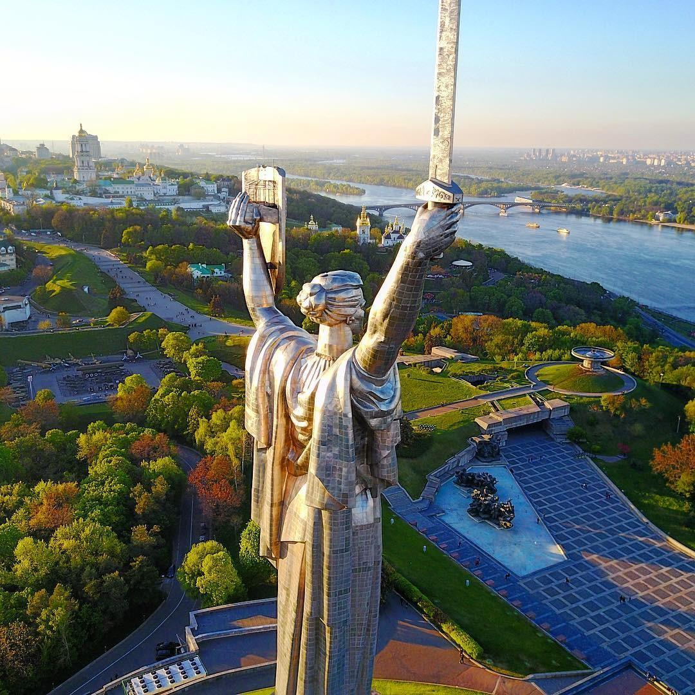
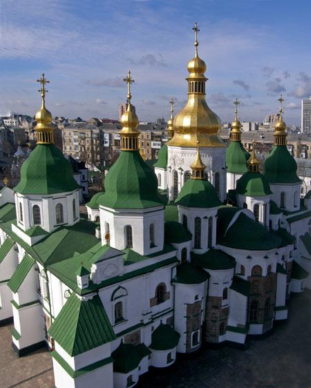
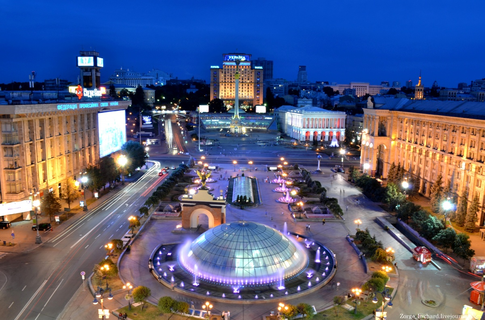
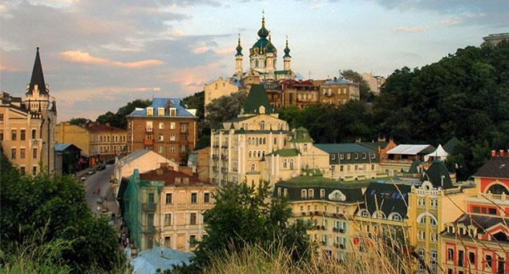
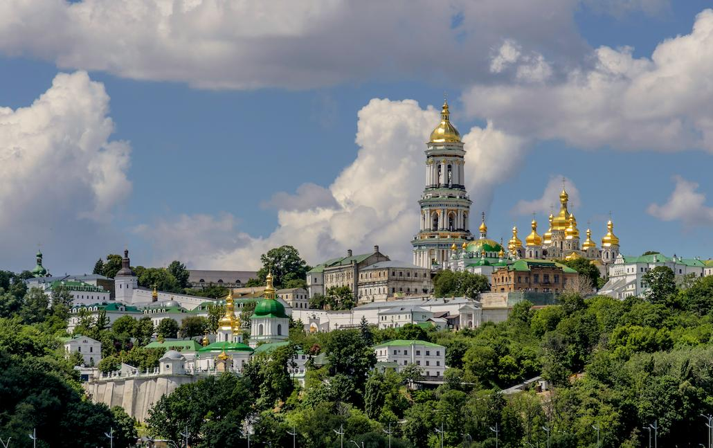

Що це за місто таке?
Київ - столиця України, одне з найбільших і найстаріших міст Європи. Розташований у течії Дніпра, у північній Наддніпрянщині. Політичний, соціально-економічний, транспортний та освітньо-науковий центр країни
Один із найстаріших історичних центрів Східної Європи та християнства — Софійський собор — та Києво-Печерська лавра внесено до списку Світової спадщини ЮНЕСКО.
Коротка історія міста
Київ був заснований наприкінці V — початку VI століття. Був столицею полян, Русі, Української Народної Республіки, Української Держави та Української Радянської Соціалістичної Республіки. Також був адміністративним центром однойменного князівства, литовсько-польського воєводства, козацького полку, російської губернії, німецької генеральної округи.
За легендою «Повісті врем'янних літ» Київ було засновано легендарним полянським князем Києм разом із братами Щеком і Хоривом і сестрою Либідь. Літопис не має дати заснування міста. Археологічні та писемні джерела свідчать, що Київ розвинувся на основі язичницького поселення кінця 5—початку 6 століття.
Детальніше про історію міста можна дізнатися тутВизначні місця
У Києві дуже багато пам’яток архітектури, скульптури, науки та спорту. Ось деякі з них:-
Хрещатик - головна вулиця міста
 -
Андріївський узвіз - найкрасивіше місце Києва
 -
Києво-печерська Лавра - один із найстаріших монастирів міста
